runs / 2026-10-20 / 121542-290000-baseline-a6ae89eb
単一HTMLで五重塔ボクセル庭園を生成、2085秒のうち888秒をブラウザ検証に
qwen3.8-flash-next（thinking=high）が、ボクセル五重塔庭園のシーンを単一HTMLに収める課題に取り組んだ。冒頭3呼びで約20分かけ48KBのシーンファイルを生成し、残り約15分はヘッドレスブラウザで無限ループ修正・構図調整・夜景演出を反復検証して、最終的にコンソールエラー0で正常終了した（exit 0、計2085秒）。
成果物
work/pagoda-garden.html（47,684 バイト）をそのまま同梱している。重いシーンもあるため、必要なときだけ起動する。
pagoda-garden.html
47 KB · 起動するまで読み込まない
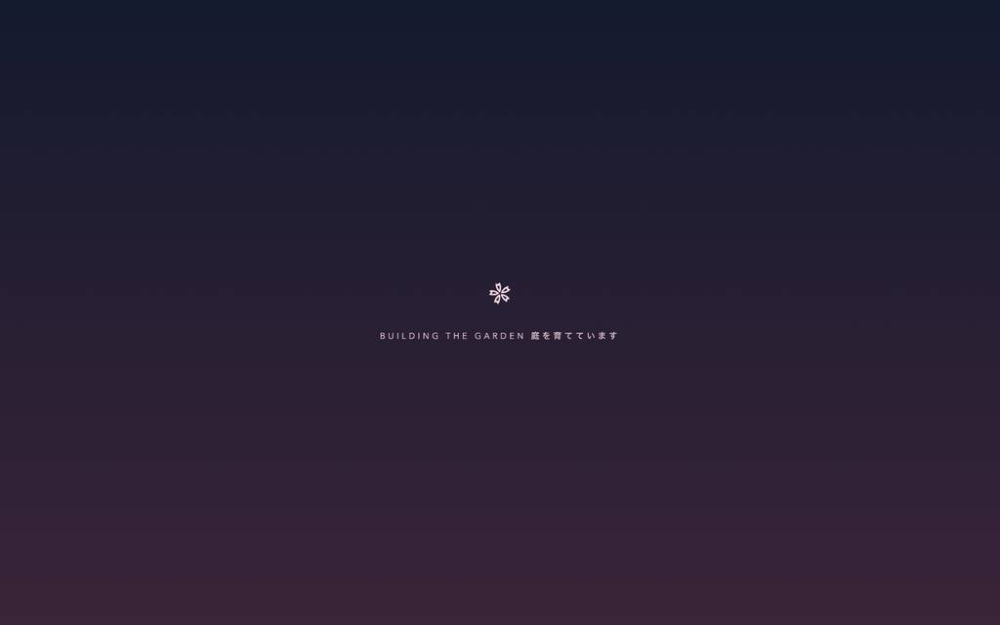
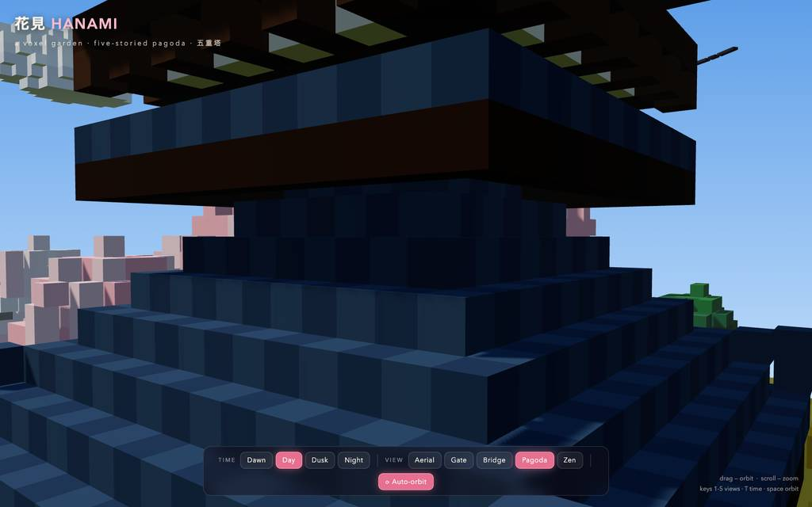
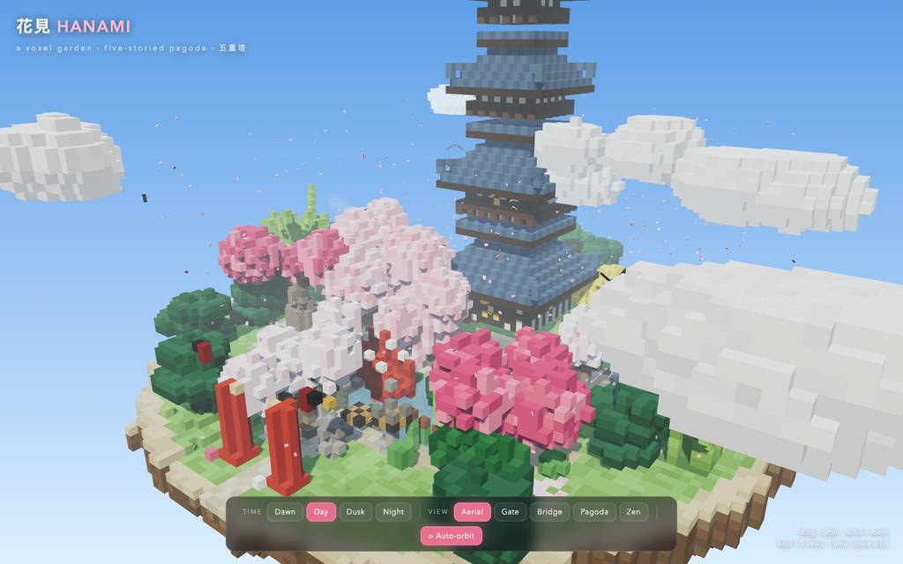
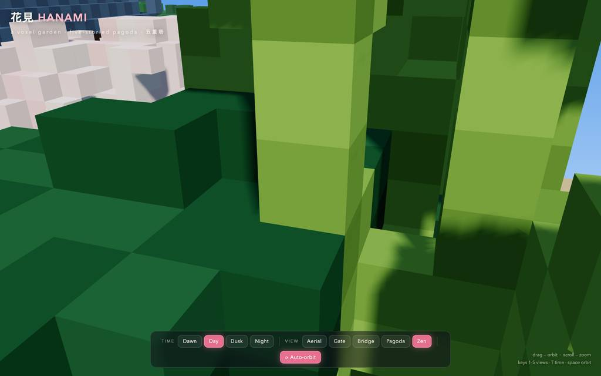
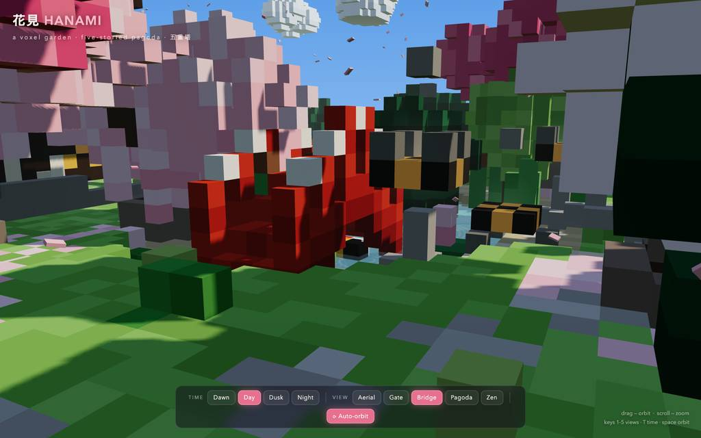
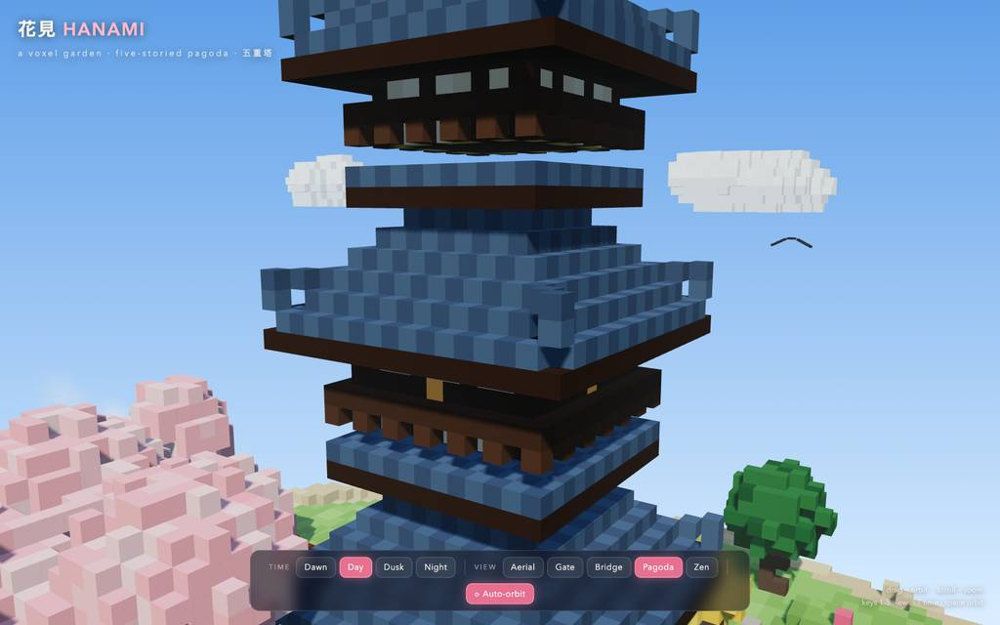
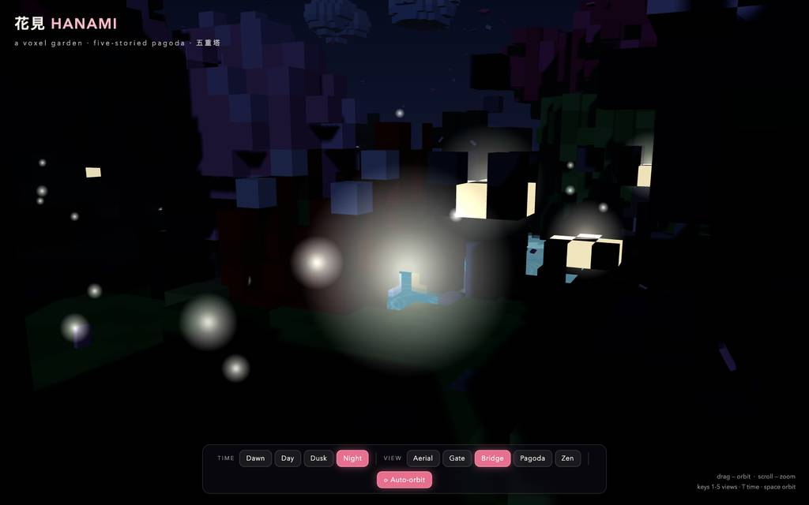
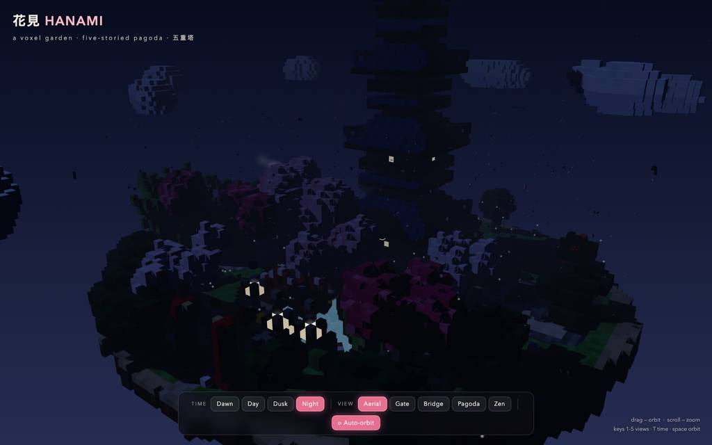
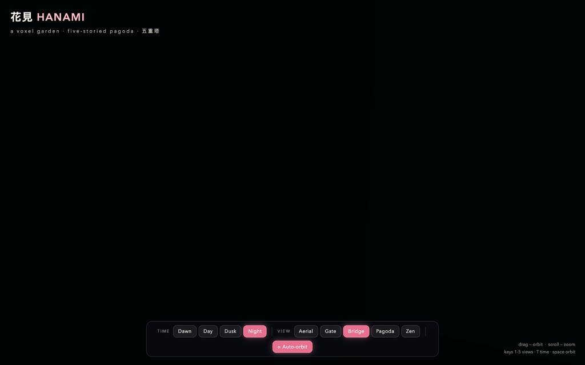
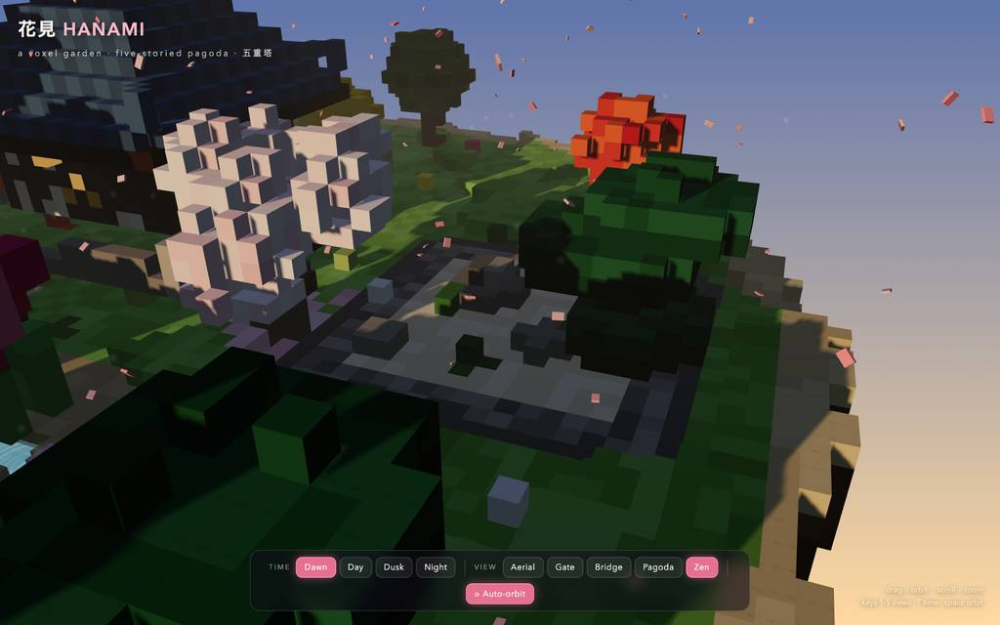
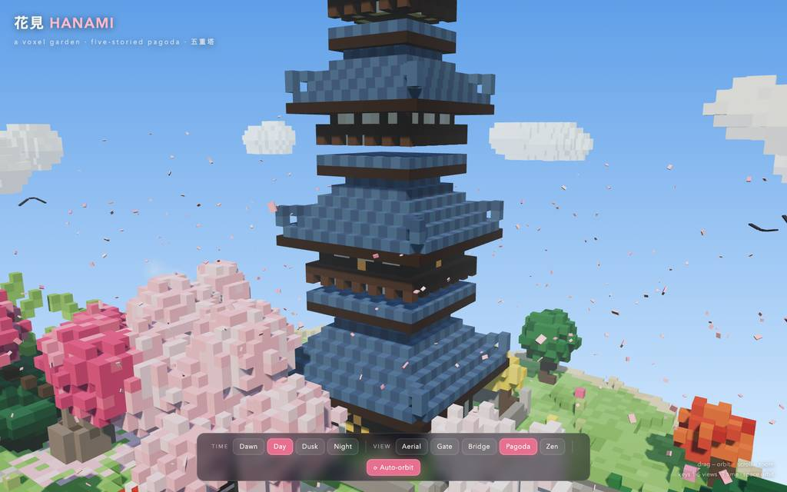
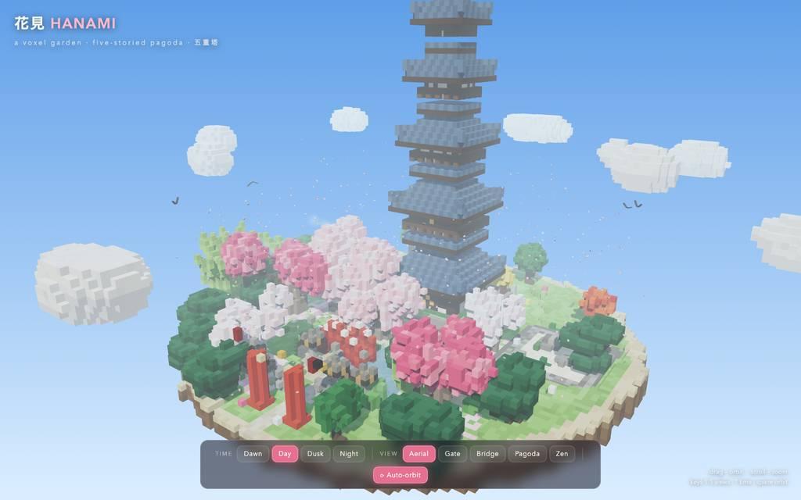
全 25 枚から等間隔に 12 枚を選んでいる。logs/events.jsonl の画像ブロックを内容ハッシュで重複排除して時系列に並べた、制作中の検証用スクリーンショット。最終版とは限らない。
成果物の構成
| 要素 | 内容 |
|---|---|
| 技術構成 | 単一HTML（48KB）、Three.js r160 をCDNから読込、約52,000個の決定論的ボクセルを色別インスタンスドメッシュにグループ化。 |
| 五重塔 | 石敷き広場と欄干・階段、5層の縮小する階、漆喰壁＋木柱格子、手すり付きバルコニー、吊り灯籠、9-ring 金銅の九輪と宝珠。 |
| 庭園建築 | 朱の鳥居、月橋、茅葺茶屋（鉾と煙）、砂紋の枯山水と岩、石塔3基、石灯籠、蹲踞、ベンチ。 |
| 植生 | 三品種6本の桜（枝垂れ含む）＋ procedurally-branched 幹と花瓣、柳、雲形松、紅葉、銀杏、竹3叢、躑躅、蓮、葦、野花。 |
| 水辺と生き物 | 5尾の手彩色錦鯉が泳ぎ尾を振り二層の水面を揺らし、睡蓮と松の島が pond に配置。 |
| 演出 | 420枚の落花、流れる雲、羽ばたく鳥、竈煙、蛍と星、灯籠の揺らぎ、Dawn/Day/Dusk/Night の4相サイクルで日射・霧・空・発光が補間。 |
| 操作系 | ドラッグ/スクロールの軌道カメラ＋自動回転、5つのプリセット（ボタン/キー1〜5）、T で時間切替、Space で軌道切替。 |
| 検証状況 | headless Chromium で2ビルド反復。無限ループ・屋根/壁の隙間・植栽に埋もれたプリセット・隅horn浮きを修正し、最終ロードはコンソールエラー0、day/dusk/night でアニメーションループ動作確認済み。 |
モデルの最終メッセージから読み取った内容。コードの確認はしていない。
タイムライン
60 回の API 呼び出しを時間順に並べた。上段の帯の幅が各呼び出しの所要時間で、帯の間の空白がツールの実行時間。下段はその時点のコンテキスト長。
最も長い 2 回の生成（#3 580 秒・#2 365 秒）で 945.5 秒、壁時計の 45.4%。出力トークンの上位 4 回（#3・#2・#1・#18）で全体の 75.4%（71,389 / 94,694）。推論以外（ツール実行など）は約 168 秒（8%）。
フェーズ別の内訳
| フェーズ | 経過 | 所要 | 全体に占める割合 | 呼び出し | 出力 tok | 何をしたか |
|---|---|---|---|---|---|---|
| 初期シーン生成 | 0:00–19:57 | 1197 秒 | 57.5% | 3 | 66,773 | ワークスペースとCDN到達性を確認後、フルシーンコードを二度書き起こし（#3はラベル上「corrected」の書き直し）、48KBのHTMLを得た。 |
| ブラウザ検証開始 | 19:57–20:46 | 49 秒 | 2.3% | 9 | 1,648 | ローカル配信してページを開こうとしたがAPI呼び出しを誤り、#6〜#8でツールのドキュメントとシグネチャを学んでからタブを開き、既定ビューのスクショとコンソールエラー収集にこぎつけた。 |
| 無限ループ修正 | 20:46–21:36 | 50 秒 | 2.4% | 5 | 1,286 | read/grepで池床の無限ループを特定し、editで止めてリロード、エラー消滅と描画確認まで一気に行った。 |
| 五重塔の外観調整 | 21:36–25:51 | 255 秒 | 12.2% | 16 | 9,759 | 切り詰め屋根プレートを追加して塔の階の隙間を埋め、瓦色を明るくし、ビュープリセット修正と柱間隔の調整で外観を詰めた。 |
| 植栽と視線の調整 | 25:51–29:15 | 203 秒 | 9.8% | 6 | 5,772 | 参道軸上の植栽を排除し、禅庭園の視線を遮るものをどかし、門・橋・禅の地上ビュープリセットを再調整して4視点を確認した。 |
| 夜景と空撮の調整 | 29:15–32:58 | 223 秒 | 10.7% | 13 | 5,901 | 夜・夕のムードを試し、灯籠スプライト縮小・星の増光・橋プリセットの引き直しを経て、夜/橋/空撮/暁の最終キャプチャと九輪が収まる空撮構図を確定した。 |
| 仕上げと停止処理 | 32:58–34:44 | 106 秒 | 5.1% | 8 | 3,555 | 隅の horn を軒に融合し過剰な高さを削る3段修正の後、最終レンダー検証・タブクローズ・テストサーバ停止で完了した。 |
フェーズの切れ目は、ログから読み取れる作業内容の変わり目（LLM による区切り）。所要時間は、そのフェーズの最初の呼び出しの開始から次のフェーズの最初の呼び出しの開始まで。
60 回の呼び出しを表で見る
| # | 種別 | フェーズ | 開始 | 所要 秒 | prompt | うち cache | 出力 | tok/s | HTTP | ツール |
|---|---|---|---|---|---|---|---|---|---|---|
| 1 | 主ループ | 初期シーン生成 | 0:00 | 251.6 | 7,803 | 7,624 | 12,404 | 49.5 | 200 | bash |
| 2 | 主ループ | 初期シーン生成 | 4:12 | 365.4 | 20,381 | 7,798 | 22,065 | 61.2 | 200 | write |
| 3 | 主ループ | 初期シーン生成 | 10:17 | 580.0 | 42,489 | 20,376 | 32,304 | 56.5 | 200 | write |
| 4 | 主ループ | ブラウザ検証開始 | 19:57 | 4.0 | 74,836 | 74,793 | 177 | 54.1 | 200 | bash |
| 5 | 主ループ | ブラウザ検証開始 | 20:02 | 4.2 | 75,065 | 75,015 | 192 | 54.4 | 200 | eval |
| 6 | 主ループ | ブラウザ検証開始 | 20:06 | 2.1 | 75,506 | 75,257 | 66 | 53.7 | 200 | bash |
| 7 | 主ループ | ブラウザ検証開始 | 20:08 | 1.1 | 75,590 | 75,572 | 53 | 62.8 | 200 | read |
| 8 | 主ループ | ブラウザ検証開始 | 20:09 | 2.6 | 75,690 | 75,642 | 96 | 51.7 | 200 | eval |
| 9 | 主ループ | ブラウザ検証開始 | 20:12 | 4.0 | 75,858 | 75,786 | 199 | 57.9 | 200 | eval |
| 10 | 主ループ | ブラウザ検証開始 | 20:27 | 3.3 | 76,133 | 76,057 | 154 | 58.1 | 200 | eval |
| 11 | 主ループ | ブラウザ検証開始 | 20:30 | 11.9 | 77,207 | 76,287 | 519 | 50.5 | 200 | eval |
| 12 | 主ループ | ブラウザ検証開始 | 20:42 | 4.1 | 77,906 | 77,726 | 192 | 56.8 | 200 | eval |
| 13 | 主ループ | 無限ループ修正 | 20:46 | 6.3 | 78,431 | 78,099 | 247 | 46.4 | 200 | read |
| 14 | 主ループ | 無限ループ修正 | 20:53 | 6.6 | 78,973 | 78,678 | 286 | 51.7 | 200 | grep |
| 15 | 主ループ | 無限ループ修正 | 20:59 | 5.0 | 79,811 | 79,259 | 196 | 51.4 | 200 | edit |
| 16 | 主ループ | 無限ループ修正 | 21:04 | 4.2 | 80,143 | 80,006 | 206 | 61.0 | 200 | eval |
| 17 | 主ループ | 無限ループ修正 | 21:18 | 7.8 | 80,459 | 80,348 | 351 | 49.6 | 200 | eval |
| 18 | 主ループ | 五重塔の外観調整 | 21:36 | 96.4 | 81,760 | 80,810 | 4,616 | 48.8 | 200 | read |
| 19 | 主ループ | 五重塔の外観調整 | 23:12 | 2.6 | 87,135 | 86,375 | 76 | 60.7 | 200 | read |
| 20 | 主ループ | 五重塔の外観調整 | 23:15 | 21.5 | 88,437 | 87,211 | 1,003 | 51.1 | 200 | edit |
| 21 | 主ループ | 五重塔の外観調整 | 23:37 | 7.0 | 89,794 | 89,441 | 291 | 49.6 | 200 | eval |
| 22 | 主ループ | 五重塔の外観調整 | 23:54 | 15.4 | 90,912 | 90,084 | 651 | 47.1 | 200 | eval |
| 23 | 主ループ | 五重塔の外観調整 | 24:10 | 15.9 | 91,683 | 91,563 | 721 | 47.4 | 200 | edit |
| 24 | 主ループ | 五重塔の外観調整 | 24:26 | 3.4 | 92,446 | 92,405 | 128 | 48.5 | 200 | read |
| 25 | 主ループ | 五重塔の外観調整 | 24:29 | 3.1 | 93,029 | 92,574 | 101 | 52.2 | 200 | grep |
| 26 | 主ループ | 五重塔の外観調整 | 24:33 | 2.0 | 93,416 | 93,131 | 66 | 62.6 | 200 | read |
| 27 | 主ループ | 五重塔の外観調整 | 24:35 | 5.7 | 93,765 | 93,482 | 264 | 56.1 | 200 | edit |
| 28 | 主ループ | 五重塔の外観調整 | 24:40 | 7.3 | 94,414 | 94,028 | 309 | 50.1 | 200 | eval |
| 29 | 主ループ | 五重塔の外観調整 | 25:00 | 21.3 | 96,308 | 94,722 | 945 | 49.1 | 200 | edit |
| 30 | 主ループ | 五重塔の外観調整 | 25:22 | 2.8 | 97,295 | 97,254 | 108 | 57.5 | 200 | edit |
| 31 | 主ループ | 五重塔の外観調整 | 25:25 | 2.2 | 97,566 | 97,402 | 77 | 57.9 | 200 | grep |
| 32 | 主ループ | 五重塔の外観調整 | 25:27 | 3.2 | 97,829 | 97,642 | 124 | 54.6 | 200 | edit |
| 33 | 主ループ | 五重塔の外観調整 | 25:30 | 6.3 | 98,123 | 97,952 | 279 | 51.7 | 200 | eval |
| 34 | 主ループ | 植栽と視線の調整 | 25:51 | 81.5 | 98,802 | 20,376 | 2,548 | 50.2 | 200 | read |
| 35 | 主ループ | 植栽と視線の調整 | 27:13 | 8.9 | 102,189 | 101,350 | 407 | 53.9 | 200 | grep |
| 36 | 主ループ | 植栽と視線の調整 | 27:22 | 14.2 | 102,771 | 102,598 | 690 | 51.7 | 200 | edit |
| 37 | 主ループ | 植栽と視線の調整 | 27:36 | 7.7 | 103,977 | 103,462 | 358 | 54.3 | 200 | edit |
| 38 | 主ループ | 植栽と視線の調整 | 27:44 | 4.4 | 104,564 | 104,334 | 190 | 55.1 | 200 | eval |
| 39 | 主ループ | 植栽と視線の調整 | 28:06 | 68.7 | 105,317 | 7,624 | 1,579 | 50.0 | 200 | edit |
| 40 | 主ループ | 夜景と空撮の調整 | 29:15 | 8.3 | 107,294 | 106,895 | 386 | 54.1 | 200 | eval |
| 41 | 主ループ | 夜景と空撮の調整 | 29:40 | 34.8 | 108,104 | 76,744 | 999 | 47.2 | 200 | read |
| 42 | 主ループ | 夜景と空撮の調整 | 30:15 | 7.2 | 109,658 | 109,103 | 304 | 50.3 | 200 | grep |
| 43 | 主ループ | 夜景と空撮の調整 | 30:22 | 6.1 | 110,510 | 109,963 | 255 | 53.4 | 200 | edit |
| 44 | 主ループ | 夜景と空撮の調整 | 30:28 | 4.3 | 111,220 | 110,766 | 149 | 47.5 | 200 | edit |
| 45 | 主ループ | 夜景と空撮の調整 | 30:32 | 3.1 | 111,411 | 111,370 | 123 | 50.8 | 200 | edit |
| 46 | 主ループ | 夜景と空撮の調整 | 30:36 | 3.0 | 111,681 | 111,533 | 111 | 54.4 | 200 | edit |
| 47 | 主ループ | 夜景と空撮の調整 | 30:39 | 7.1 | 111,900 | 111,792 | 286 | 45.6 | 200 | edit |
| 48 | 主ループ | 夜景と空撮の調整 | 30:46 | 7.0 | 112,372 | 112,185 | 336 | 55.9 | 200 | eval |
| 49 | 主ループ | 夜景と空撮の調整 | 31:06 | 34.1 | 113,096 | 76,744 | 906 | 47.5 | 200 | edit |
| 50 | 主ループ | 夜景と空撮の調整 | 31:40 | 14.3 | 114,187 | 114,003 | 674 | 50.1 | 200 | eval |
| 51 | 主ループ | 夜景と空撮の調整 | 32:09 | 30.7 | 115,313 | 99,784 | 1,133 | 48.8 | 200 | edit |
| 52 | 主ループ | 夜景と空撮の調整 | 32:40 | 5.4 | 116,579 | 116,446 | 239 | 53.5 | 200 | eval |
| 53 | 主ループ | 仕上げと停止処理 | 32:58 | 31.5 | 117,123 | 99,784 | 1,121 | 48.4 | 200 | read |
| 54 | 主ループ | 仕上げと停止処理 | 33:29 | 6.1 | 118,592 | 118,245 | 284 | 57.3 | 200 | edit |
| 55 | 主ループ | 仕上げと停止処理 | 33:35 | 9.6 | 119,176 | 118,876 | 417 | 49.2 | 200 | edit |
| 56 | 主ループ | 仕上げと停止処理 | 33:45 | 4.2 | 119,753 | 119,594 | 168 | 51.4 | 200 | edit |
| 57 | 主ループ | 仕上げと停止処理 | 33:49 | 9.7 | 120,025 | 119,920 | 441 | 49.9 | 200 | eval |
| 58 | 主ループ | 仕上げと停止処理 | 34:11 | 18.1 | 120,786 | 99,784 | 426 | 48.0 | 200 | eval + bash |
| 59 | 主ループ | 仕上げと停止処理 | 34:29 | 1.6 | 121,241 | 121,212 | 66 | 59.7 | 200 | write |
| 60 | 主ループ | 仕上げと停止処理 | 34:31 | 12.9 | 121,339 | 121,309 | 632 | 51.2 | 200 |
試行錯誤
ツールがエラー（isError）を返した結果の一覧。ツールは成功したのにモデル自身が内容を壊したケースは、ここには出ない。
エラーとして記録された 7 件
| 経過 | ツール | 起きたこと | 分類 |
|---|---|---|---|
| 20:06 | eval | browser.open() をオプションオブジェクトなしで呼び、TypeError で拒否された。TypeError: browser.open() expects an options object at validateOptions ([eval-prelude:browser]:5:23) at open ([eval-prelude:browser]:256:32) at <anonymous> (js-cell-55be190e-51cc-48da-88bc-b5cdff43dfb | API誤用 |
| 20:09 | read | 存在しない xd://browser を読みに行き、No such tool で失敗した。No such tool: xd://browser. Mounted devices: ast_edit, debug, lsp. Active top-level tools are also dispatchable via xd://<tool>. | ツール名誤り |
| 20:30 | eval | スクリーンショット自体は正常取得で、座標変換（×1.41）の注記が返された。Screenshot captured Format: image/jpeg (12.46 KB) Dimensions: 1024x640 [Image: original 1800x1125 at capture scale 1.25, displayed at 1024x640. Multiply image coordinates by 1.41 to get viewport CSS p | 注記付き応答 |
| 24:26 | edit | REM 行を単独で出さず本体行と混ぜ、edit が拒否された。line 3: `REM` deletes the whole file and takes no body rows or line ops. Issue it alone under the header. | edit構文誤り |
| 25:22 | edit | 同じ REM 単独発行ルール違反で二度目の edit 拒否。line 4: `REM` deletes the whole file and takes no body rows or line ops. Issue it alone under the header. | edit構文誤り |
| 30:32 | edit | 同じ REM ルール違反で三度目の edit 拒否。line 2: `REM` deletes the whole file and takes no body rows or line ops. Issue it alone under the header. | edit構文誤り |
| 33:45 | edit | 表示したことのない行番号を edit のアンカーに使い、実ファイル内容と不一致で拒否された。This edit anchors to lines 269 of pagoda-garden.html that [pagoda-garden.html#5B44] never displayed (it showed a partial range, a search hit, or a folded summary). Actual file content at those lines: | 行番号参照切れ |
経過は、そのツールを呼んだターンの終了時刻。エラー本文は先頭 300 文字までで、パスや接続先は伏せてある。
気づいた点
計測データ（呼び出し一覧・エラー・最終メッセージ）だけから LLM が書いた読み取り。文中の数値は、上の KPI や表と照らして確認する。
出力トークンの7割が冒頭3呼び
#1〜#3 の出力合計66,773は総量94,694の約70%を占め、所要も1,197秒で全体2,085秒の57%。以降の57呼びは平均約490トークンずつの小さな修正・検証に費やされている。
REM誤用が3回再発
E4（t=1466s）・E5（t=1522s）・E6（t=1832s）はいずれも「REM は単独発行」という同一ル違反による edit 拒否。#24〜#27・#30・#45 と、その場で行数再読取か再発行により回復している。
2度目のフル書き直しの理由不明
#2・#3 とも22k/32kトークンの全シーン write で、#3 のラベルは「corrected」であり #2 の内容が一度作り直されている。ただし #2 の呼び出し自体は HTTP 200 で成功扱いのため、書き直しの直接原因はこのログからは特定できない。
48KB内の行探しに数十秒
#18 の read は屋根関数所在の特定に96.4秒/4,616トークン、#34 は植栽コードに81.5秒/2,548トークンを要し、#39 も68.7秒かかった。単一ファイルの再定位が後半の遅い呼び出しの主因になっている。
検証は計25枚のスクショで反復
summary の shots=25 が示す通り、eval 19回の大半はリロード・エラー収集・キャプチャであり、最終確認まで複数回の目視相当検証が行われた。ピークコンテキストは121,339でウィンドウ1,048,576の約11.6%にとどまる。
入力と設定
Design and create a very creative, elaborate, and detailed voxel art scene of a pagoda in a beautiful garden with trees, including some cherry blossoms. Make the scene impressive and varied and use colorful voxels. Add as many details as possible to showcase your attention to them. Use whatever libraries to get this done but make sure I can paste it all into a single HTML file.
input/prompt.md の全文。SHA-256 は ceece4685b37…。
| omp の起動オプション | --print --mode json --thinking high --no-title --approval-mode yolo |
| upstream | （接続先は伏せている） |
| タイムアウト | 10,800 秒 |
config/00-omp.yml
setupVersion: 2 autolearn: enabled: false autoContinue: false